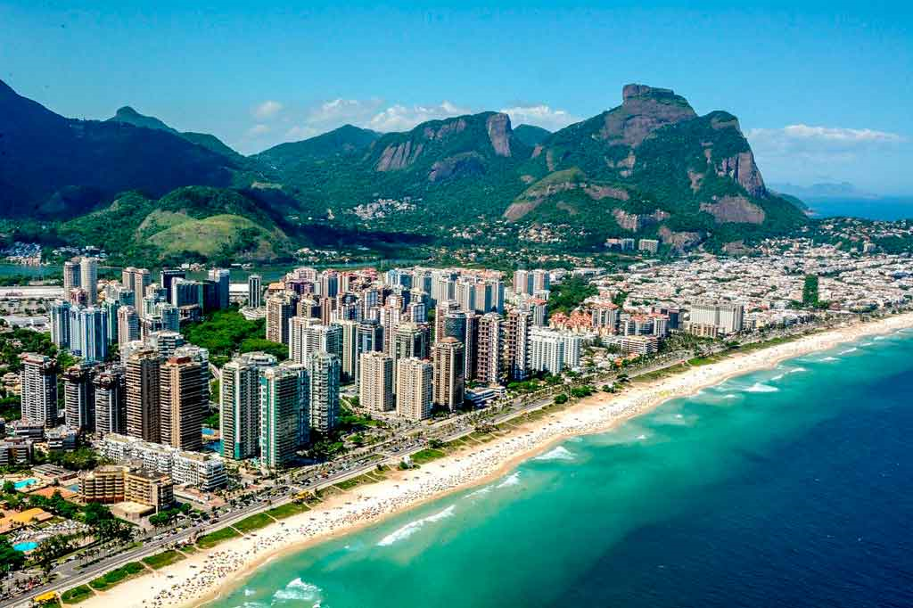
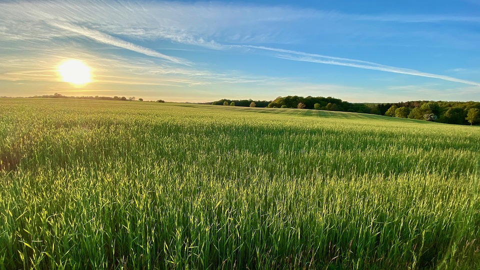

Verão:
A estação mais quente do ano é conhecida como verão. Sua ocorrência difere-se nos hemisférios Norte e Sul.
Essa estação do ano antecede o outono e sucede a primavera.
Caracterizada especialmente pelas altas temperaturas, o verão é normalmente o mês associado ao período de férias.
Muitas pessoas planejam viagens, especialmente para litorais, durante a vigência dessa estação.
O solstício de verão marca o início da estação.
Nesse momento, um dos hemisférios da Terra está inclinado em direção ao Sol, recebendo maior quantidade de raios solares.
Essa inclinação é em relação à latitude, a partir da Linha do Equador. Assim, quanto mais distante da Linha do Equador, maior a incidência dos raios solares.
Enquanto um dos hemisférios encontra-se no solstício de verão, o hemisfério oposto passa pelo solstício de inverno.
Por exemplo, enquanto é verão no hemisfério Sul, ao mesmo tempo é inverno no hemisfério Norte.
O verão era dividido em dois momentos: o verão, propriamente dito, caracterizado por um clima quente e chuvoso, e o estio, caracterizado por clima quente e seco.
Horário de Verão:
O horário de verão é caracterizado pelo adiantamento das horas de acordo com o fuso horário local e atualmente cerca de 70 países o utilizam.
Como nessa estação do ano os dias são mais longos, a finalidade dessa atitude é aproveitar a luz solar, visto que o Sol nasce antes.
Assim, o horário de verão está intimamente relacionado com a economia de energia elétrica.
No hemisfério Sul, o horário de verão é adotado durante a primavera e termina no início do outono, prevalecendo durante toda a estação do verão, entre outubro e março.
No hemisfério Norte, o horário de verão inicia-se em março/abril e termina, normalmente, em outubro/novembro.
Isso porque evita a sobrecarga do consumo energético, principalmente no denominado “Horário de Pico”, entre 18h e 21h
O horário de verão foi proposto em 1784, pelo diplomata e líder da Revolução Americana, Benjamin Franklin (1706 -1790).
Curiosidades Sobre o Verão:
- O início do verão é marcado pelo solstício de verão, período em que os raios solares atingem a Terra com maior intensidade
- Alguns estudiosos acreditam que no verão as pessoas reagem com maior positividade e alegria.
Pois a luz solar é capaz de estimular a produção de serotonina, um neurotransmissor responsável pelo controle do humor e da energia em nosso corpo.
- Segundo a revista inglesa New Scientist, por meio de uma pesquisa publicada no ano de 2003, o Sol é considerado um dos elementos que explicam a felicidade de um povo.
- O verão no hemisfério Norte é chamado de verão boreal, e, no hemisfério Sul, de verão austral.
- Nessa estação as pessoas precisam estar atentas à hidratação, pois tendemos a transpirar com mais intensidade, evitando assim problemas de saúde.
Ambiente Urbano no Verão

Ambiente Rural no Verão
